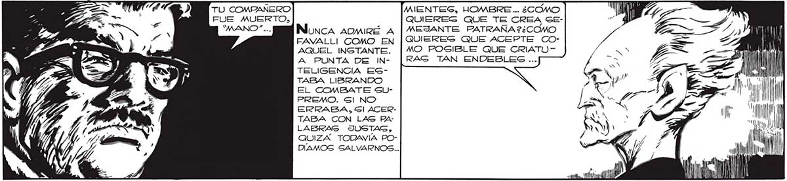
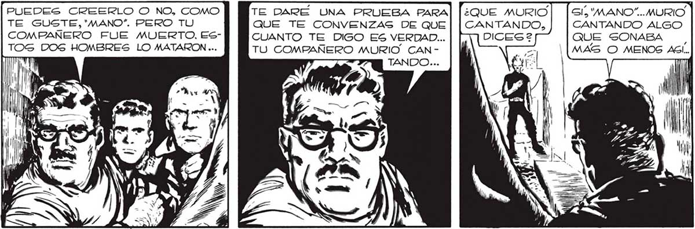
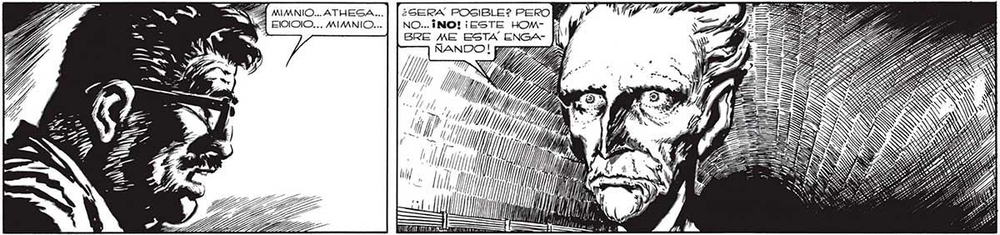

238 TU COMPAÑERO MIENTES, HOMBRE... ¿COMO | Mi FUE MUERTO, QUIEREG QUE TE CREA SE- 1 ; "MANO"... Nonca AOMIiRÉ A | MEJANTE PATRAÑA 2¿COMO AN FAVALLI COMO EN | QUIERES QUE ACEPTE CO- l di AQUEL INSTANTE. MO POSIBLE QUE CRIATO- N . sa - 7 h 00 A PUNTA DE IN- |RAS TAN ENDEBLES ... 7 IL Ú TELIGENCIA ES- O, AA A TABA LIBRANDO ASA LISANDO a AN e reis A runp" 1 | Al E. , >? ale A UN | TABA CON LAS PA- : ¡A m | ñ LABRAS JUSTAS, db 5 QUIZA TODAVÍA PO- q | | li AÑ DIAMOG SALVARNOS... dl Ml J pnl | co AIN ira 0 ¿QUE MURIO | | GS, 'MANO”.. MURIO CANTANDO, CANTANDO ALGO QUE SONABA ¡| MAS O MENOS ASI... .. TAN ATRAGADAG TÉCNICAMENTE, PUEDAN LLEGAR A DESTRUIR NADA MENOS QUE A UN MANO”"2¿TE OLVIDAS, HOMBRE, QUE NOSOTROS CONOCEMOS TODOS LOS LIMITADOS RECUR-Í GOS DE LA ESPECIE HUMANA 2 by PUEDES CREERLO O NO, COMO TE GUSTE,"'MANO”. PERO TU COMPAÑERO FUE MUERTO, ESsTOS DOS HOMBRES LO MATARON ... TE DARE UNA PRUEBA PARA QUE TE CONVENZAS DE QUE CUANTO TE DIGO ES VERDAD... TU COMPAÑERO MURIO. CAN ARS MMNIO... ATHEGA...] [¿serx PosiBLe? PERO Y Dn EIOIO... MIMNIO... | | NO...INO! ¡ESTE HOM- E BRE ME ESTA ENGA- fi Y, LA, . WM 7 o Y, Y) e / Y ha A ll, 1/1, ¿AN == 7 le Ju 1)) /) AS WN IN IN N SS > Di 0/1 E tr


